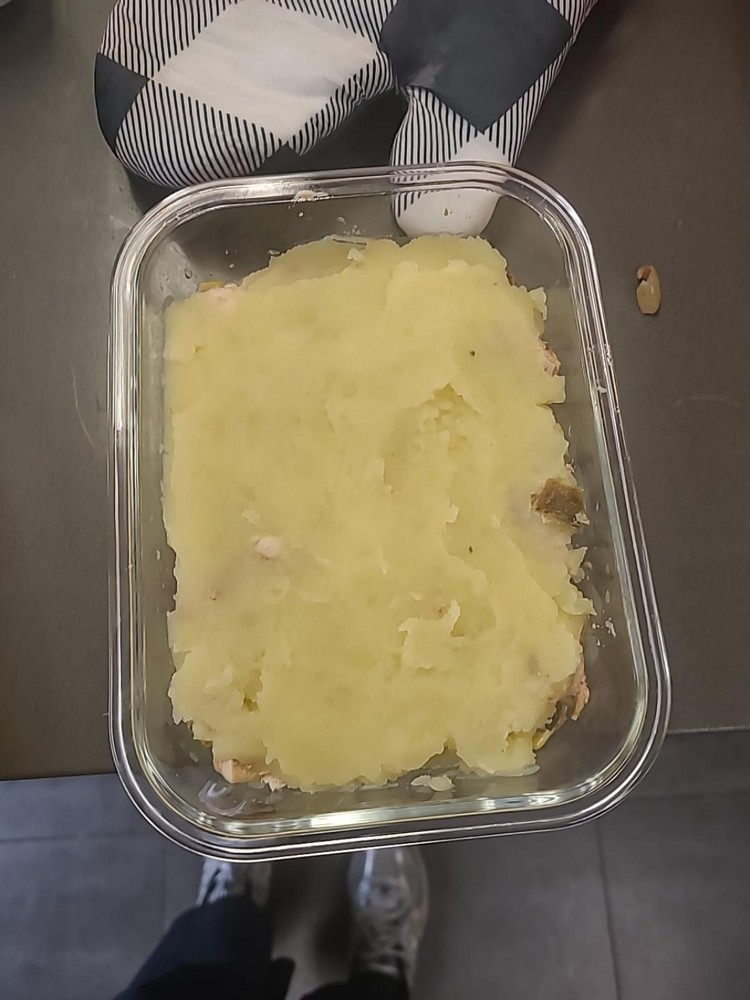
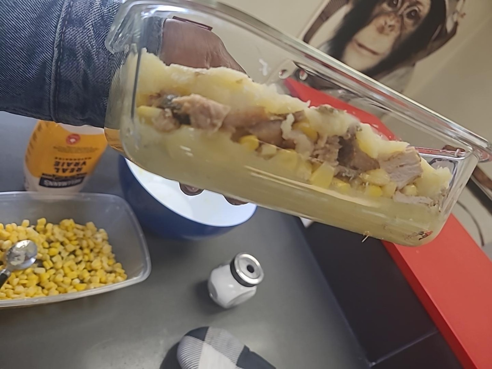

Trouver une idée a été plus difficile que prévu.
Au départ, je voulais créer quelque chose autour de ma culture congolaise et de ce que j'ai découvert depuis mon arrivée au Québec. Je ne voulais pas faire un simple « Congo contre Québec », parce que mon expérience ici ne se limite pas à la culture québécoise. J'ai rencontré des personnes de plusieurs cultures et découvert de nouvelles façons de manger, de s'habiller, de parler ou simplement de voir certaines choses.
Ma première idée était un jeu autour de ces différences et de ces rencontres. Puis mon enseignante m'a posé une question très simple :
Cette question m'a beaucoup bloquée. Je pensais qu'imaginer mon propre jeu était déjà créatif. En essayant de répondre, j'ai compris que j'avais surtout trouvé un thème qui me ressemblait. Je n'avais pas encore trouvé ce que j'allais réellement créer avec ce thème.
Essai 1. Représenter mon identité avec un puzzle.
Essai 2. Transformer un objet ordinaire, notamment un foulard.
Essai 3. Adapter le jeu du Train mexicain en gardant mon idée de rencontre entre les cultures. Je voulais utiliser la mécanique d’un jeu existant pour provoquer des rencontres entre différents éléments culturels. Cette piste restait cependant encore très centrée sur le jeu plutôt que sur ce que ces rencontres pouvaient réellement produire.
Retour. Revenir aux rencontres culturelles, mais cette fois pour les utiliser comme matière première de création.
Et si deux univers se rencontraient ?
Après plusieurs essais, j’ai décidé de ne plus chercher un objet qui serait « créatif » en lui-même. J’ai plutôt construit une démarche autour d’une question : « Et si… ? »
Le principe est simple : je prends deux éléments qui ne sont pas naturellement associés et je provoque leur rencontre. J’essaie ensuite de créer quelque chose à partir des caractéristiques de chacun.
Mon point de départ
Mon univers culturel congolais fait partie de mes références, mais mon expérience depuis mon arrivée au Québec m’a aussi mise en contact avec plusieurs cultures, habitudes et façons de faire.
Ce que j’essaie de créer
Je ne cherche pas à opposer les cultures. Je me demande plutôt ce qu’une rencontre inattendue entre deux éléments peut produire, puis je développe une proposition à partir de cette rencontre.
Deux rencontres, deux façons de transformer.
Identité visuelle
Hiver québécois
Et si le pagne devait affronter un hiver à −20 °C ?
Ma première réponse : un véritable manteau d'hiver qui conserve une identité visuelle inspirée du pagne, tout en intégrant isolation, doublure, protection contre le vent et capuchon.
Univers culinaire congolais
Structure découverte au Québec
Et si le poulet mayo rencontrait le pâté chinois ?
Je conserve la structure en couches du pâté chinois, mais je transforme sa base : poulet mayo bien assaisonné → maïs → purée de pommes de terre.
Je suis passée de l’idée à l’expérimentation. J’ai réellement préparé le plat en gardant la structure en couches du pâté chinois et en y intégrant mon poulet mayo. La rencontre entre les deux plats devient ainsi une réalisation concrète que je peux goûter, observer et critiquer.


Les notions que j'ai réellement utilisées.
Rencontre improbable
Je rapproche volontairement deux éléments qui ne seraient pas spontanément associés. L'étrangeté de la combinaison devient un déclencheur.
Transfert
Je sélectionne certaines caractéristiques d'un univers et je les déplace vers l'autre : l'identité visuelle du pagne vers le manteau, ou le poulet mayo vers la structure du pâté chinois.
Analogie
Je cherche ce qui peut jouer un rôle comparable dans deux éléments différents. Cela m'aide à dépasser le simple collage.
Pensée critique
Une combinaison n'est pas automatiquement une bonne idée. Je dois examiner ce qui fonctionne, ce qui paraît forcé et ce qui mérite d'être abandonné ou retravaillé.
Je jugeais surtout ma créativité par le résultat.
Au début, je cherchais une idée qui aurait l'air créative. Si elle me semblait trop simple, je l'abandonnais. La démarche « Et si… ? » n'a pas fait disparaître ce doute, mais elle m'a permis de déplacer la question : au lieu de demander uniquement « est-ce que mon résultat est extraordinaire ? », je peux regarder comment l'idée est apparue, comment je l'ai transformée et ce que j'ai appris de ses limites.
Je ne termine pas ce projet avec une définition parfaite de la créativité. Je la vois cependant moins comme l'obligation de produire immédiatement quelque chose de spectaculaire, et davantage comme un processus où l'on provoque des associations, transfère des caractéristiques, teste, critique et recommence.
Utilisation de l'IA
L'intelligence artificielle a été utilisée comme soutien à la structuration et à la reformulation du rapport, à l'exploration de certaines pistes ainsi qu'à la réalisation du site Web. Les idées du projet, les choix, les expériences, les doutes et l'analyse personnelle présentés ici proviennent de mon cheminement.